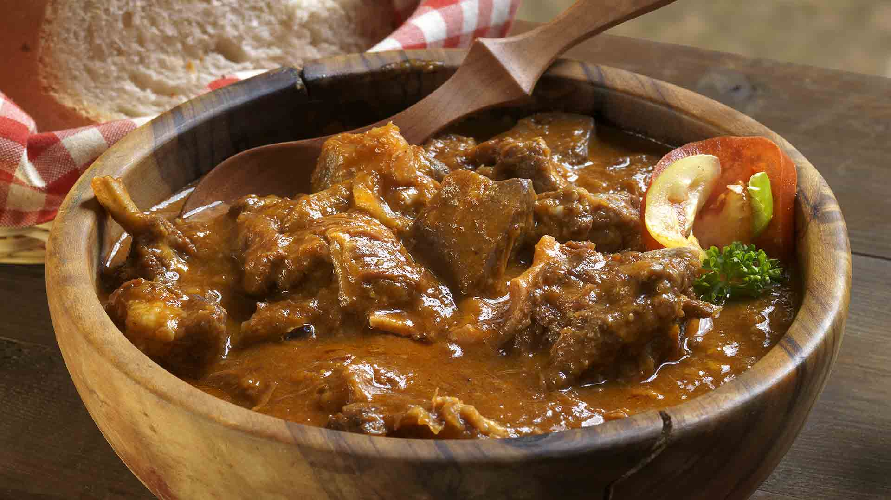

Mutton Stew

Mutton stew recipe
One of the popular stews in the world. A dish perfect for a cold weather
Ingredients
- Water
- Mutton chops
- Salt
- Spices
- Tomato
- Onion
- Carrots
- Potatoes
- Flour
- Mutton soup
Steps
- Wash mutton chops thoroughly
- Place chops in the pot and put it on the hot stove
- Stir the tripe for it to cook evenly
- Cut tomato and onion into small pieces and put the mixture in the pot
- Add salt and/or spices and stir for ingredients to mix properly
- Pour water into the pot
- Cut carrots and potatoes and pour into the pot
- Make soup paste and pour it into the pot and stir well
- Sprinkle flour and mix with other ingredients
- Allow the stew to cook for 30 minutes
- Serve the dish